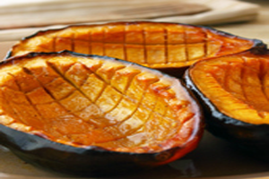
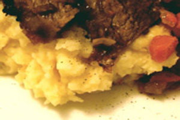
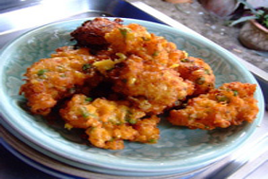
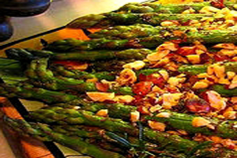
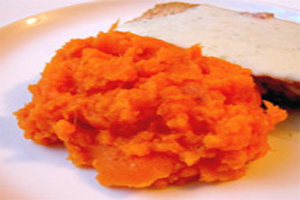

- Recipes
Baked Acorn Squash
American-Baked Acorn Squash Recipe
Ingredients Needed:
Procedure:
1. Preheat oven to 400 degrees F. 2. Cut the acorn squash in 1/2 lengthwise, and scoop the seeds and strings out of the cavity. Carefully score the inside of each squash half with a sharp knife, making 1/8-inch deep cuts about 1/2-inch apart (refer to mouthwatering photo). Use a pastry brush to paint each half with the orange juice. Sprinkle generously with salt. Bake for 30 minutes. 3. In a small saucepan, combine the brown sugar, butter, maple syrup and fresh ground black pepper. Bring to a boil, stir, and cook for one minute. Reserve. 4. Remove the squash from the oven, and spoon off any liquid that has accumulated in the cavities. Brush the glaze evenly over each, and bake for another 40 minutes, or until tender and caramelized on the edges. Allow to sit for 15 minutes before serving, possibly with a bit more salt sprinkled over. 5. For an extra nice glaze, baste the squash with the syrup that collects in the cavity a few times while it's baking.
Triple Garlic Mashed Potatoes
American-Triple Garlic Mashed Potatoes Recipe]
Ingredients Needed:
Procedure:
1. Put the potatoes and the sliced garlic in a saucepan and cover with cold water. Add 1 tsp of salt and bring to a boil. Reduce heat to medium and cook until the potatoes are tender, but not falling apart. Drain well in a strainer, and reserve. 2. Put the saucepan back on med-low heat and add the butter and minced garlic. When the garlic starts to sizzle, cook for 1 minute, and turn off heat. Add the drained potatoes, milk, raw garlic, salt, and pepper. Mash until smooth. Serve hot.
Fresh Sweet Corn Fritters
American-Fresh Sweet Corn Fritters Recipe
Ingredients Needed:
Procedure:
1. Over a large bowl, using a sharp knife, carefully shave the corn kernels off the cob. With the back of the knife, scrap the milky juice from the cob into the bowl. Whisk the eggs and milk into the corn until thoroughly combined. In another bowl, combine the flour, cornmeal, sugar, salt, and baking powder. Pour into the bowl of the corn mixture, and stir with a spatula to form a thick batter. 2. Pour oil about 3/4-inch deep into a heavy-duty skillet. Over med-high heat bring oil to 375°F. When oil is hot, drop rounded tablespoons of batter carefully into the oil. Don’t crowd, the fritters should not touch each other. Best done in two batches. Cook about 3 minutes on each side, until the corn fritters are golden brown. Drain on paper towels or wire rack. Salt if desired, and serve corn fritters immediately.
Roasted Asparagus with Toasted Hazelnuts
American-Roasted Asparagus with Toasted Hazelnuts
Ingredients Needed:
Procedure:
1. Preheat oven to 450 degrees F. 2. Coat the asparagus with 1 tbsp of the olive oil, and salt and pepper to taste. Spread evenly on a baking sheet. Roast in the hot oven for about 10 minutes (depending on thickness), or until the asparagus spears are tender, but not soft. 3. While the asparagus is roasting, add the butter, hazelnuts, and other tablespoon of olive oil to a small pan. Toast the hazelnuts over low flame until golden-brown. Do not brown too much, or the hazelnuts will become bitter. When the asparagus is ready transfer to a serving plate and spoon over the hazelnut butter. Serve with lemon wedges if desired.
Buttermilk Mashed Yams
American-Buttermilk Mashed Yams Recipe
Ingredients Needed:
Procedure:
Boil the yams in salted water until just tender. Do not overcook, as the yams will absorb too much water. Drain well, and transfer back to the pot. Add the buttermilk, and salt; mash until smooth. Serve hot. May be made ahead and reheated in the microwave.